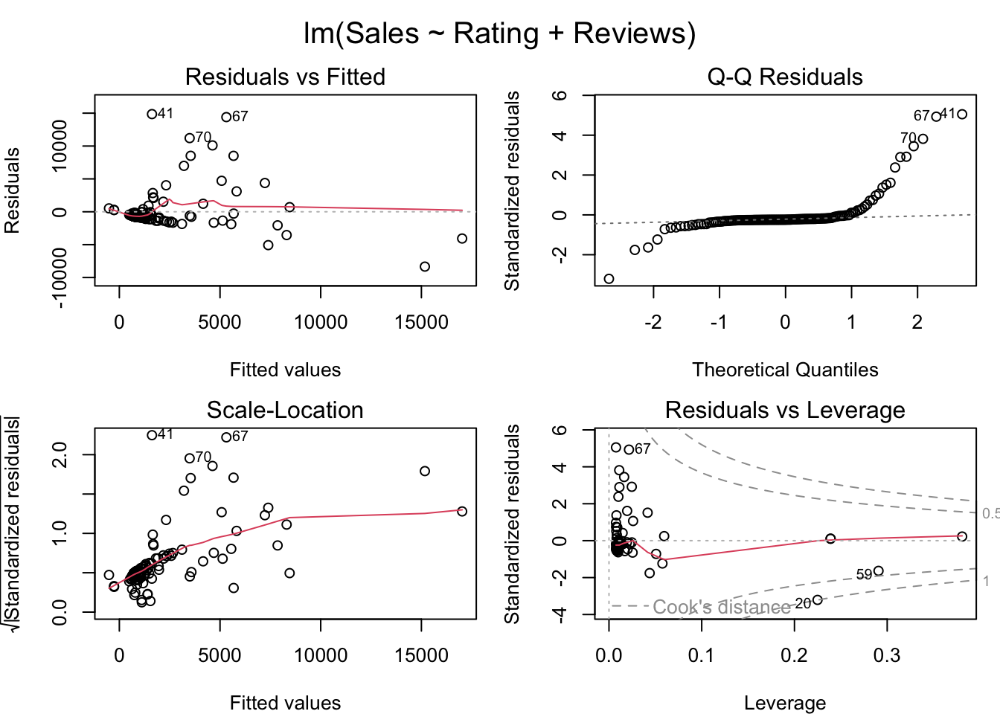

The dataset, scraped from Nemesis between 1st January to 11th January, contains 1334 files comprising 607 posts on drug sales, 415 posts on fraud, 134 posts providing guides and tutorials on illegal activities, and other miscellaneous posts. In this analysis, we will focus solely on the drug sales-related posts.
As the original documents were in text format, which made it difficult to carry out quantitative analysis, I cleaned the data and put them into a data frame. I then saved the data frame as a CSV file named “complete.csv”.
The payment method
Bitcoin and Monero accepted. All items are listed as an escrow. The order process is as follows:
After the buyer has placed an order, the vendor has 5 days to accept or reject the order.
The buyer will get a full refund if the vendor doesn’t accept the order within 5 days.
If the buyer doesn’t want to wait 5 days, there will be a cancel button after 48 hours to cancel the order and get a full refund.
After the order got accepted, the vendor has 5 days to send it. The buyer can not cancel the order at this point.
The buyer will get a full refund if the vendor doesn’t send the order within 5 days.
The buyer has 3 days to open a dispute if the order does not match the description.
After the order got finalized, the buyer can leave a review.
If you have any questions, leave a comment or create a post on our forum.
Different types of drug are sold in Nemesis, namely, Cannabis, Dissociatives, Opioids, Steroids, Psychedelics, Stimulants, Prescription Drugs, Benzodiazepine (Benzos), Ecstasy, and others. Some drug type has specific subcategories associated with it. For example, under the drug type Cannabis, the subcategories include Buds and Flowers, Hash, and Shake. The “count” column represents the number of posts for each drug subcategory, indicating the frequency or popularity of each drug subcategory. For instance, the drug subcategory “Buds and Flowers” has a count of 103, and it has the highest number of posts among all the drug subcategories listed. Dissociatives (Ketamine), Ecstasy (XTC Pills), Steroids, and Stimulants (Cocaine, Amphetamine/Speed) also have significant counts, suggesting their popularity in the market.
The number of posts of each drug (Top20)
#capitalise all the drug names and count data$DrugName <-toupper(data$DrugName)item_counts <- data %>%group_by(DrugName) %>%summarise(count =n()) %>%arrange(desc(count))head(item_counts, 20)
The data frame consists of the top 20 drug names mentioned in posts. The “count” column represents the number of posts for each drug. It can partly indicate the popularity of each drug. Based on the counts, we can see that LSD (n=14), Heroin (n=9), Gorilla Glue (n=7), Racemic Ketamine (n=7), and Xanax (n=7) have relatively higher counts, suggesting a higher level of discussion or interest in these drugs.
The brand name of the drugs for sale
The table below shows each brand name and its number of occurrences, and it can be observed that MONSTERLAB and HYDROGURU are the brands with the highest number of occurrences. These two brands are not specific to any particular drug, but rather the names of the labs. It seems that they have generated a certain brand effect, representing a guarantee of high-quality drugs.
Another interesting observation is that the brand name of XTC Pills may indicate the strength or purity of these drugs and also provide a guarantee of quality for buyers. For instance, ORANGE TESLA with the warning “strong, be careful!” (01025.txt) may harbour more potential strength compared to Pink Glitter Tesla, with the description “very clean and stimulating” (00307.txt). While almost all vendors selling XTC Pills highlight the “high quality” of their products, some emphasise that their XTC Pills have been “lab tested” (13 out of 42 posts) or “black light tested and reagent tested with Marquis and Froehd” (00458 and 01025). Such measures in place serve the primary role of ensuring top-notch quality and utmost safety.
data %>%filter(Drug_Type =="Ecstasy » XTC Pills"&!is.na(BrandName)) %>%select(Drug_Type, BrandName) %>%unique()
It is worth mentioning that not all drugs available on the market are actually available on Nemesis Market. According to the dataset provided, the availability rate of drugs on the Nemesis Market is 95.87%. This may be due to reasons such as the drug being sold out or the drug vendors being on holiday.
Rating, Reviews and Sales
#Get the Rating number from stringsdata$Rating <- data$Rating %>%str_extract("\\d+(\\.\\d+)?") %>%as.numeric()#Select the columns that we needdata_RRS <- data %>%select(DrugName,Drug_Type,Vendor_Name, Rating,Reviews,Sales)data_RRS %>%filter(Sales==0)
From the data frame above, we can see the drugs sold by the vendor are different, but the number of Rating, Reviews and Sales are the same. Thus, one important point here is that the ratings, reviews, and sales displayed on each post are not specific to the drug being sold itself, but rather pertain to the vendor. In other words, the ratings, reviews, and sales are a comprehensive evaluation of all the products sold by a vendor. This design reflects to a certain extent the importance and uniqueness of trust in the illegal market. In an environment without legal protections, the reputation of the individual vendor becomes particularly important, and may even outweigh the quality of the specific product itself. Unfortunately, since each vendor may sell different types of drugs, it would be statistically impossible to know the best-selling drug types, highest-rated drug types, or the types of drugs that receive the most reviews.
As previously indicated, the data collection period extends over a span of 11 days. It is important to note that trading activities were taking place throughout this duration, resulting in fluctuations in variables such as ratings, sales, and reviews. For instance, a comparison of the reviews and sales numbers for the vendor XANAX （line 7 and 8) reveals minor disparities. Consequently, I retain the row containing the highest sales number as the definitive value for the rating, reviews, and sales of each vendor.
The statistical information about ratings, reviews, and sales.
Rating Reviews Sales
Min. :0.000 Min. : 0.0 Min. : 1.00
1st Qu.:4.700 1st Qu.: 20.0 1st Qu.: 39.25
Median :4.900 Median : 92.5 Median : 298.00
Mean :4.726 Mean : 417.6 Mean : 1921.37
3rd Qu.:5.000 3rd Qu.: 368.8 3rd Qu.: 1217.00
Max. :5.000 Max. :5356.0 Max. :19712.00
Scatter plot of Sales vs. Review
ggplot(Vendor_RRS, aes(x = Reviews, y = Sales)) +geom_point() +theme_minimal() +labs(title ="Sales vs. Reviews", x ="Reviews", y ="Sales") +geom_smooth(method ="lm", se =FALSE)
The correlation between the number of reviews and the number of sales is the strongest, with a correlation coefficient of 0.646. This means that an increase in sales is likely due to an increase in the number of reviews. The correlation between the number of reviews and the rating is weak, with a correlation coefficient of 0.148. The correlation between the number of sales and the drug rating is also weak, with a correlation coefficient of 0.138. This indicates that rating may not have a significant impact on the increase in number of sales.
Multiple Linear Regression
model <-lm(Sales ~ Rating + Reviews, data = Vendor_RRS)summary(model)
Call:
lm(formula = Sales ~ Rating + Reviews, data = Vendor_RRS)
Residuals:
Min 1Q Median 3Q Max
-8341.0 -786.1 -713.7 -476.1 14857.0
Coefficients:
Estimate Std. Error t value Pr(>|t|)
(Intercept) -514.4264 1821.9378 -0.282 0.778
Rating 246.4012 384.8634 0.640 0.523
Reviews 3.0445 0.3206 9.497 <2e-16 ***
---
Signif. codes: 0 '***' 0.001 '**' 0.01 '*' 0.05 '.' 0.1 ' ' 1
Residual standard error: 2952 on 131 degrees of freedom
Multiple R-squared: 0.419, Adjusted R-squared: 0.4101
F-statistic: 47.23 on 2 and 131 DF, p-value: 3.595e-16
par(mfrow =c(2, 2), mar =c(4, 4, 2, 1), oma =c(0, 0, 2, 0))plot(model)

Although the model only explains 41% of the variation in sales (R2 > 0.7 indicates a good fit of the model), the linear regression model demonstrates that the impact of Reviews on sales is significant, whereas the impact of Rating on sales is not significant.
By comparing sales figures, we can identify that the top 10 sellers are TorDrug (19712)，MicroDroper (16478)，discover (14720)，Utopia (14697)，YOURDEALER (14179)，SocialPharma (12956)，drugstar (12056)，queenofcannabis (11606)，HighClass (10196)，ozconnection (9792) . The numbers in the parenthesis are sales on this platform.
We can further examine their advertising, returns policies, and self-introductions to understand why some sellers’ products are more popular and in what ways they gain the trust of buyers.
TorDrug (Selling Hash) <00533, 00534>
TorDrug as the top selling vendor has no description of the hash he sells other than the name, and the refund policy is blank. There is no way to tell how he gained trust based on the data provided. Have they gained reputations from other platforms? It’s hard to know.
MicroDroper (ISOTONITAZENE and Fentanyl) <00017, 00019, 00496, 00689>
Before describing the products, MicroDroper always introduces themselves to establish trust.
Hey, We are MicroDroper team. 7 years in the Dark Market. Over 16k reviews. 100% satisfaction. We are working with TGC labs (tgchemicals.com) and here to provide for you the best quality of research chemicals on the Darknet. Seems like Nemesis market is the best market place. Our team hope to have good relationships in this market and hopefully they will stay up for a long run!
They emphasise their experience (7 years) in the dark web market, the large number of positive reviews (over 16,000), and high satisfaction rate (100%) to build trust and authority. This is done to attract potential customers and make them believe that they are reliable and professional. However, it is clear that 100% satisfaction is not true as they only have a rating of 4.7, which is the lowest among the top 10 sellers. They highlight their collaboration with TGC Laboratory and emphasise “best quality,” reflecting their attempt to stand out in a competitive market. Their optimism towards the Nemesis market and focuses on establishing relationships reflects their emphasis on market stability and willingness for long-term operations.
They have provided detailed descriptions for each product, including composition, purity, and potency. At the same time, they have not concealed the potential harm that the drugs may cause to the human body. On the contrary, we can observe that the information contributes to harm reduction in a broader context. (For me, harm reduction here refers to minimising the harmful consequences of drug use and promoting health and dignity of people who use drug.)
Please be careful with this product. IT’S STRONG AND VERY HIGH QUALITY!! (00496, Pos. 49)
isotonitazene can be expected to pose a significant risk of producing life-threatening respiratory depression, as well as other typical opioid side effects such as sedation, itching, nausea and vomiting. (00019, Pos. 48-51)
By providing honest and transparent information about the side effects and dangers of drugs, vendors can, to some extent, build trust. Potential users may be more inclined to work with vendors who are concerned about user safety. Vendors may feel that they have an ethical responsibility to provide accurate information to potential users to ensure that users are able to make informed decisions.
Moreover, MicroDroper adds a customer review in the description.
Customer Review on the product: I tried it Intramuscular as the way I usually run when doing opioids. Felt completely nothing. I contacted TGC and he asked me to try it orally and to let him to know if any effect. and WOW! This works really nicely! I feel great! Euphoria is wonderful! Haven’t felt like this in a while! (00017, Pos. 50-54)
Establishing trust: product reviews are crucial in building trust. Seeing positive comments can make potential customers believe that the product is widely accepted and effective, thereby influencing their purchasing decisions.
Product validation and experience sharing: The review validates the product’s effectiveness when used in a specific way (orally in this case). This can guide other customers on how to use the product for the best results.
Customer Engagement: The comments indicate that the vendor is responsive and willing to help customers achieve optimal results. This can increase customer engagement and satisfaction.
MicroDroper offers a 100% reshipment guarantee, but the maximum amount for reshipment is 500 grams. Buyers are encouraged to place multiple orders if their needs exceed this limit.
discover (Alprazolam (Xanax) and Ketamine) <00868, 01067, 01148>
Although there is no detailed introduction to the product, safety and quick shipping are the selling points of discover. They ask the buyer to “encrypt address for safety!” Not only does they draw the consumers’ attention to dosage control, but they also provides methods to minimise harm. For instance,
Be careful, it is strong. Please practice proper safety measures and start small! (01148, Pos. 51-52)
They promises fast and secure delivery and provides 100% Refund if package is seized. However, there will be no refund for the wrong address.
Utopia (Cannabis » Concentrates) <00312>
Utopia was the top seller on concentrates. Without detailed description, the vendors stressed their accessibility of providing service and claimed that their products were the “best in Australia”, and all orders were vacuum sealed and posted with tracking.
The only competitor to Utopia is a vendor named GreenConnection (00313, 00315, 00694). They had a sales volume of 4764 and sold a product called Rosin. Unlike Utopia, GreenConnection provided a description of what Rosin was and how it was made. There were also detailed explanations of the cultivation methods, taste, and effects on the body of the raw materials used.
YOURDEALER excels in the trade of speed paste. Despite the scarcity of information regarding the speed paste they offer, YOURDEALER provides a “almost free” tester (approximately 0.5g) for each customer.
Providing free products for customers to experience can enhance interaction and trust between customers and vendors. It also satisfies customers’ curiosity and desire for exploration, making them more willing to try new products. In this process, customers may develop emotional connections with the vendor, thereby increasing their loyalty to the vendor.
Refunds only for regular customers, we ship every order with the highest care and have almost all orders arrived. If a sending is lost and we believe you, it gets reshipped. (01104, Pos. 25-27)
This refund policy helps establish and maintain a trusting relationship between customers and the vendor. Providing refund services only to regular customers can reduce the losses due to dishonest and malicious refund claims. It can also demonstrate the vendor’s commitment to customer loyalty. In other words, it encourages customers to continue shopping with them, thus forming a stable business relationship.
By emphasising the importance of each order and ensuring successful delivery for most orders, the vendor can reduce customers’ concerns about purchasing risks and increase their willingness to buy. This helps to build a positive brand image and attract more potential customers. If any items are lost, the vendor states that they will reship, which helps to maintain customer satisfaction and improve the customer retention rate.
SocialPharma primarily sell two types of drugs, namely Benzodiazepine (Benzos) and Opioids. Only Oxycodone is shipped from the United Kingdom to worldwide destinations, and it is marked as “non-refundable/non-reshipable.” The other products he sells, namely Zopiclone, Diazepam (Valium), Dihydrocodeine, Codeine, and Tramadol, are sold locally in the UK and have corresponding return and exchange policies. The vendor is a self-employed because he always refers to himself with “me” instead of “us”. Surprisingly, his drug descriptions are often limited to just two lines, specifying the quantity and strength, without mentioning the quality of the products. Similarly, his return and exchange policies are quite brief. He offers either a reshipment or a 50% refund based on the buyer’s purchase time and his own perception of the buyer’s trustworthiness.
Therefore, we can assume that the trust generated by the high ratings (all five stars) and a large number of reviews no longer requires him to go through the trouble of describing the product and building trust. In a way, the rating system and sales data have established trust that surpasses the need for product descriptions themselves. Another explanation could be attributed to the types of drugs they sell. Most of these drugs are sold in tablets, which gives limited room for detailed descriptions. This is in stark contrast to vendors selling Cannabis.
Welcome to DrugStar your professional drugstore. Active before on Agora and Evolution. 500+ transactions with excellent feedback more currently on Alphabay and HANSA market with these stats 292/5/7) (176/4/4) DREAMMARKET 7000 SALES 4.8+ WALLSTREET 500+ 4.8+ EMPIRE MARKET 9000+ SALES 4.83+ WHITE HOUSE MARKET 1300+ SALES 96,80% POSITIVE ETC. ETC. CHECK RECON FOR VERIFICATION! (00369, Pos. 23-28)
Drugstar is a professional retail company that operates across multiple platforms and sells a variety of drugs. Providing excellent sales data on various platforms is an important way for them to gain the trust of buyers. They offer 24/7 customer service and have the ability to professionally package products and ship them worldwide. In order to prioritise safety, they provide “NO TRACKED SHIPMENTS!” As a result, they only provide
Europe 50% reship in case of no show or 25-50% refund Everything outside of Europe 25-50% reship in case of no show, or 25% refund. No reships if less then 5 total transactions. (00369, Pos. 98-100)
From their descriptions of each product, it is evident that they have a high level of professionalism. All products are thoroughly introduced in the order of a knowledge guide, medical usage, and drug effects. This includes aspects of harm reduction, such as the risks of mixed usage of drugs, the dangers of overdose, and recommendations for safe intervals between drug use.
K-hole and therapeutic effect, hangover zero to none. (doesn’t go well with alcohol) (00369, Pos. 30-31)
At higher doses, however, it reportedly produces a hallucinogenic trance-like state (called a “k-hole”) that is often described as an out-of-body or near- death experience. (00369, Pos. 56-60)
It is usually recommended to wait for one to three months between each use to give the brain adequate time to restore serotonin levels and avoid toxicity. Additionally, using excessively high doses and multiple redosing is highly discouraged as this is thought to significantly increase the toxicity of MDMA. When using, drink enough water, stay hydrated. (00371, Pos. 76-80)
Unlike other vendors, they provide the information about the dosage, duration, and corresponding experience of each drug. For example:
These detailed introductions help buyers understand the drugs and prepare themselves physiologically and psychologically before use. They can control the dosage for each use, thus reducing harm to their health.
Another feature of Drugstar is their strong emphasis on customer reviews. They encourage customers to contact them before leaving negative reviews. Additionally, they have established guidelines for writing reviews. They also build their reputation by rewarding those who give positive reviews with additional amount for their next order without additional cost.
Queenofcannabis (Cannabis » Hash/buds and Flowers) <00530,01094,01194,01200,01205> (no info about refund policy)
For cannabis sellers, Tetrahydrocannabinol (THC) level is generally provided as an indicator for potency. Numerous paragraphs are dedicated to describing the aroma and taste of each Cannabis product. For example, when describing Afghan Kush (01253), the aroma and taste of this strain are depicted three times in details (01253, Pos. 35-37, Pos. 47-50, Pos. 85-100 ). Furthermore, the heritage/hybrid of Cannabis is also an important aspect that vendors want to emphasise to highlight the rarity and effects of their products. For example:
Alien Cookies is an evenly balanced hybrid (50% sativa/50% indica) strain created through a cross of the popular Alien Dawg X Girl Scout Cookies strains. This bud is incredibly rare to find, but totally worth it every time because of its flawless combination of its parents’ effects. (01240, Pos. 27-30)
The effects of different drugs on the body reveals several patterns:
Social Behavior and Creativity: Individuals who seek these drugs for their psychotropic effects may seek to experience heightened sociability, amplified ethusiasm and to facilitate creative endeavors.
Euphoria and Blissful Sensations: These effects may contribute to a sense of happiness, cheerfulness, and laughter, thereby attracting individuals seeking positive emotional experiences.
Relaxation and Body Buzz: This combination of physical relaxation and elevated mood may be appealing to individuals seeking stress relief, tranquility, and a soothing experience.
Medicinal Benefits: Individuals may turn to these drugs for potential therapeutic effects.
Sleep and Sedation: Some individuals may seek these drugs to aid with sleep-related issues or relaxation before bedtime.
Ways to attract purchase or gain trust:
Being frankly about the side effects: while dry mouth and dry eyes are often mentioned in the posts, medical adverse reactions are listed.
The minimal negative side effects: for example, the vendor points out that Amnesia Haze is a sativa strain with minimal negative side effects compared to other sativa strains, as it doesn’t induce dizziness, paranoia, anxiety, or nausea. The main drawback of Amnesia Haze is dry mouth (cotton mouth), which can be alleviated by staying hydrated before, during, and after cannabis consumption. (see 00497, Pos. 92-101)
Maurelius’s Refund Policy: “If your order doesn’t show up we can offer you 50% reship or refund of the original order. For years we used to reship 100% of the orders but unfortunately we live in a world where people take advantage of you and sometimes our clients lie when it comes to receiving orders. Please understand that we are here for money and we feel sorry that honnest men/women have to suffer the loss. Besides, you are buying weed, not vegetables. :)”
In the refund policy, it was mentioned that 100% of orders would be reshipped in the past, but later it was changed to only providing 50% reshipment or refund. This indicates the dynamics of the market. Customers who receive the items can still lie and claim that they have not received them in order to deceive for a refund or reshipment. Sellers are increasingly experiencing such negative experiences, which forces them to adjust their return and exchange policies to ensure overall profitability. This return and exchange policy reflects that the trust between sellers and buyers has not been resolved by the escrow method. The sale of drugs is not regulated or protected by law, and buyers and sellers seek a balance of trust through interaction and experience. This is further evidenced by the refund policy provided by SocialPharma, which is based on his perception of the buyer’s trustworthiness.
Similar to DrugStar, HighClass’s products are also shipped from the Netherlands to the whole world, but they do not provide a detailed description of their products. Not only do they not offer refunds or reshipments in the case of non-arrival, but they also punish those who give them negative reviews - once a negative review is given, the right to a refund or reshipment is lost. They are able to respond to buyers within 24 hours. The following sentences indicate their emphasis on reputation.
I took years building my reputation, it’s sacred to me. I can’t afford negative reviews, especially on a new marketplace. I hope you understand. (00907, Pos. 62-65)
These sentences also reflect the importance of seizing the initiative in a new market platform. In a market full of instability, whoever has a large number of positive reviews first is more likely to form a virtuous cycle. In other words, buyers are unlikely to compare products from multiple sellers, but rather choose to directly purchase from sellers with more positive reviews.
I am one of the very few vendors who have been around since the original Silk Road in 2013. I have been a trusted vendor on every major market since then. I always have the lowest price compared to the competition for each product i offer. My quality is consistently high My stock levels are unlimited My feedback is flawless, No exit scamming or Rip Off accusations ever My shipping is always on time My stealth works Customer service is a priority and i will answer every message (00741, Pos. 21-31)
ozconnection does not provide any content related to the product, but instead use self-introduction to enhance their credibility and sales. Firstly, they emphasise their history and extensive experience. They claime to have survived even after the closure of Silk Road, which was once the largest illegal goods trading platform in the world. At the same time, they assert that they have advantages over their competitors in terms of price, quality, inventory, feedback, integrity, shipping, anonymity, and customer service, without any drawbacks or risks. Finally, his refund policy is “case by case (00741, Pos. 33-34)”.
Route Visualisation on a map
I used Cannabis as an example. It doesn’t work well as NA, Unknown Location (I replaced it with NA), European Union, and World Wide cannot be shown on the map because they don’t have coordinates (latitude and longitude) information. Please see the warning below. If I remove them, then in most cases, the drugs are shipped domestically, which is not useful to show them on the map. Therefore, I used Sankey Diagram to do the data visualisation without putting them on the map.
#replace "Unknown Location" with NA, Using Cannabis as an exampleRoute_Cannabis <- data %>%filter(Drug_Type_L=="Cannabis") %>%select(Ship_From, Ship_To) %>%mutate(Ship_To =str_replace(.$Ship_To, " - .*", "")) %>%mutate(Ship_From =ifelse(Ship_From =="Unknown Location", NA, Ship_From), Ship_To =ifelse(Ship_To =="Unknown Location", NA, Ship_To)) %>%group_by(Ship_From, Ship_To) %>%summarise(count =n()) %>%ungroup()
#Convert the country names to ISO3 codes:Route_Cannabis$iso_from <-countrycode(Route_Cannabis$Ship_From, "country.name", "iso3c")Route_Cannabis$iso_to <-countrycode(Route_Cannabis$Ship_To, "country.name", "iso3c")
Warning: Some values were not matched unambiguously: European Union, World Wide
Again, I used Cannabis as an example. If you hover your mouse over the gray band, you can see the frequency of appearances of this transportation route in all drug-related advertisements. The wider the gray band, the more frequent the occurrence of this route. You can also move the blocks around if the words overlap. We can substitute Cannabis with other types of drugs and compare the differences. However, due to space limitations, we may not be able to include all the necessary diagrams in our publication. So, the following way of data visualisation might be more helpful.
Top 5 routes for each type of drug based on the number of advertisements
This diagram presents observations regarding the sending and destination locations for various drug types. The findings are as follows:
Benzodiazepines (Benzos): This drug type is primarily dispatched from the United States and the United Kingdom. The majority of shipments remain within their respective regions, while others are distributed globally.
Cannabis: Cannabis is predominantly sent from the United Kingdom, the United States, and Spain. Within the United Kingdom, there is significant domestic circulation, whereas the United States mainly receives shipments for its own region.
Dissociatives and Opioids: These two drug types are mainly dispatched from the United Kingdom, Netherlands, and the United States. They are distributed worldwide, although a portion is also sent to the sender’s own region, either the United Kingdom or the United States.
Ecstasy: Ecstasy is shipped worldwide, with the Netherlands serving as the primary sending location. The circulation volumes in the United Kingdom and the United States are relatively smaller.
Prescription Drugs: The diagram indicates that India is the leading sending location for prescription drugs, followed by Germany and the Netherlands. These drugs are sent to various destinations worldwide, including the European Union, the United States, and the United Kingdom.
Psychedelics: The diagram suggests that the United States is the primary sending location for psychedelics, followed by the Netherlands. The destinations for psychedelics encompass the United States, the United Kingdom, and other global locations.
Steroids: The majority of steroids originate from an undisclosed location, while the United Kingdom also plays a role in their distribution.
Stimulants: The data reveals that the United States is the primary sending location for stimulants, followed by the Netherlands and Germany. These drugs are dispatched to various destinations worldwide, including the United States, the United Kingdom, and other locations.
Weight Loss: Based on the available data, weight loss drugs are shipped from Poland.
In summary, the sending and destination locations vary for different drug types. Some drugs circulate primarily within specific regions, while others have a global circulation. However, the distribution of vendors appears to be concentrated within the UK and EU regions, with sporadic presence of US-based vendors. These insights can help us understand the circulation trends and market demand for different drug types.
Themes
Refund/Reship
Most vendors will provide partial or full refunds depending on the circumstances, such as sending the wrong product, incorrect quantity, or being detained. However, there are some suppliers who do not offer any refunds at all.
In the case of lost or detained orders, many suppliers will provide a one-time 100% reshipment service, especially for tracked orders within Europe. Orders outside of Europe usually only qualify for a 50% reshipment or a 25-50% refund.
Some merchants have set conditions for returns and exchanges, such as:
Tracking must show that the order has not been delivered in order to qualify for reshipment/refund.
There is a minimum order amount requirement between 500 euros to 1500 euros in order to receive a 100% delivery guarantee and compensation within Europe.
Only old customers (usually those who have placed 2 or more orders) are eligible for the reshipment/refund.
Due to the risk of seizure, the reshipment/refund policy is sometimes not available for certain countries with strict regulations.
Strategies used to increase the likelihood of repeat purchases.
Providing a generous reshipment policy (e.g. 100% reship/refund) to establish customer’s trust.
Improving the customer experience by offering fast delivery and clear estimated delivery time windows and using tracked shipping options for higher-priced international orders.
Limiting reshipment eligibility for loyal customers, which can encourage new buyers to complete multiple initial orders.
Preventing disputes by explaining all policies upfront and managing expectations on restrictions and risks of certain delivery methods.
Emphasising communication and problem-solving rather than punishing helps maintain a good reputation.
Customers may not be eligible for a refund in the following situations:
If they provide an incorrect or incomplete address, or if there are issues with their previous address.
If tracking shows that the order has been delivered or returned to the sender.
If they claim to have received less items than they ordered or the package was empty, which is considered a fraudulent attempt.
If they are dissatisfied with the product quality or taste, as this is subjective and cannot be considered a valid reason for a refund.
If they leave negative feedback or raise a dispute without first contacting the vendor
If they order from a location outside of Europe, where there are higher transportation and customs risks
If they order through a non-tracked shipping method, as the delivery status cannot be verified.
Interesting points without much data:
Cultural elements in 01193
Please do not mistake my description of Poison as “Hard Sell”
In fact, I actively discourage certain people from buying it.
It is for the more refined, the more spiritual among us.
It is for those who create music, who write poetry.
It is for those who seek answers within.
It’s weed for living and loving life.
It’s food for the soul…
I like to think of it as the Zen of weed.
gratefullydead, the seller of Nbomes, attempted to defend the safey of using Nbomes through pointing out that The Nbome Death Scare is Fake News creatted by the Anti Drug effort (00088).
Analysis based on DrugType?
Please find the attached file: DrugType_CR.xlsx
Limitations
The data sample size is limited, and the time frame for data collection spans 11 days. However, trading was ongoing during this period, and variables such as ratings, the number of sales and reviews were constantly changing. These changes could impact the statistical data and comparisons. The sales data collected on day 1 from one vendor may differ significantly from the data collected from another vendor on day 11. However, if both sets of data were collected on the same day, the differences in sales data might not be as significant.
Source Code
---title: "GeneralAnalysis"format: html: code-fold: false code-tools: true---## About the dataThe dataset, scraped from [Nemesis](http://nemesis555nchzn2dogee6mlc7xxgeeshqirmh3yzn4lo5cnd4s5a4yd.onion/) between 1^st^ January to 11^th^ January, contains 1334 files comprising 607 posts on drug sales, 415 posts on fraud, 134 posts providing guides and tutorials on illegal activities, and other miscellaneous posts. In this analysis, we will focus solely on the drug sales-related posts.As the original documents were in text format, which made it difficult to carry out quantitative analysis, I cleaned the data and put them into a data frame. I then saved the data frame as a CSV file named "complete.csv".## The payment method**Bitcoin and Monero accepted.** All items are listed as an **escrow**. The order process is as follows:- After the buyer has placed an order, the vendor has 5 days to accept or reject the order.- The buyer will get a full refund if the vendor doesn't accept the order within 5 days.- If the buyer doesn't want to wait 5 days, there will be a cancel button after 48 hours to cancel the order and get a full refund.- After the order got accepted, the vendor has 5 days to send it. The buyer can not cancel the order at this point.- The buyer will get a full refund if the vendor doesn't send the order within 5 days.- The buyer has 3 days to open a dispute if the order does not match the description.- After the order got finalized, the buyer can leave a review.- If you have any questions, leave a comment or create a post on our forum.## Load Packages and data```{r}#| label: load-packages_data#| warning: false#| code-fold: truelibrary(tidyverse)library(forcats)library(stringr)library(tidytext)library(igraph)library(ggraph)library(ggrepel)library(car)library(geosphere)library(countrycode)library(rnaturalearth)library(rnaturalearthdata)library(sf)library(lwgeom)library(ggsankey)library(networkD3)data <-read_csv("/Users/shihaitao/Documents/DarknetProject/Nemesis/complete.csv")```## The number of posts of each type of drugs (Top20)```{r}#| warning: falsedata %>%group_by(Drug_Type) %>%summarise(count =n()) %>% tidyr::separate(Drug_Type, into =c("Drug_Type", "Drug_Sub"), sep =" » ") %>%arrange(desc(count)) %>%head(.,20)```Different types of drug are sold in Nemesis, namely, Cannabis, Dissociatives, Opioids, Steroids, Psychedelics, Stimulants, Prescription Drugs, Benzodiazepine (Benzos), Ecstasy, and others. Some drug type has specific subcategories associated with it. For example, under the drug type Cannabis, the subcategories include Buds and Flowers, Hash, and Shake. The "count" column represents the number of posts for each drug subcategory, indicating the frequency or popularity of each drug subcategory. For instance, the drug subcategory "Buds and Flowers" has a count of 103, and it has the highest number of posts among all the drug subcategories listed. Dissociatives (Ketamine), Ecstasy (XTC Pills), Steroids, and Stimulants (Cocaine, Amphetamine/Speed) also have significant counts, suggesting their popularity in the market.## The number of posts of each drug (Top20)```{r}#capitalise all the drug names and count data$DrugName <-toupper(data$DrugName)item_counts <- data %>%group_by(DrugName) %>%summarise(count =n()) %>%arrange(desc(count))head(item_counts, 20)```The data frame consists of the top 20 drug names mentioned in posts. The "count" column represents the number of posts for each drug. It can partly indicate the popularity of each drug. Based on the counts, we can see that LSD (n=14), Heroin (n=9), Gorilla Glue (n=7), Racemic Ketamine (n=7), and Xanax (n=7) have relatively higher counts, suggesting a higher level of discussion or interest in these drugs.## The brand name of the drugs for saleThe table below shows each brand name and its number of occurrences, and it can be observed that MONSTERLAB and HYDROGURU are the brands with the highest number of occurrences. These two brands are not specific to any particular drug, but rather the names of the labs. It seems that they have generated a certain brand effect, representing a guarantee of high-quality drugs.```{r}data$BrandName <-toupper(data$BrandName) BrandName_Re_NA <- data$BrandName[!is.na(data$BrandName)] #remove NAbrand_counts <-as_tibble(table(BrandName_Re_NA))colnames(brand_counts) <-c("BrandName", "Count")brand_counts <- brand_counts %>%arrange(desc(Count))brand_counts```### The brand name of XTC PillsAnother interesting observation is that the brand name of XTC Pills may indicate the strength or purity of these drugs and also provide a guarantee of quality for buyers. For instance, ORANGE TESLA with the warning "strong, be careful!" (01025.txt) may harbour more potential strength compared to Pink Glitter Tesla, with the description "very clean and stimulating" (00307.txt). While almost all vendors selling XTC Pills highlight the "high quality" of their products, some emphasise that their XTC Pills have been "lab tested" (13 out of 42 posts) or "black light tested and reagent tested with Marquis and Froehd" (00458 and 01025). Such measures in place serve the primary role of ensuring top-notch quality and utmost safety.```{r}data %>%filter(Drug_Type =="Ecstasy » XTC Pills"&!is.na(BrandName)) %>%select(Drug_Type, BrandName) %>%unique() ``````{r}#| echo: FALSE#see the description of XTC Pills#view(data %>% filter(Drug_Type =="Ecstasy » XTC Pills") %>% select(File_Name,BrandName,MainContent)) ```### The availibility rate```{r}mean(data$Availablity =="Yes", na.rm =TRUE)```It is worth mentioning that not all drugs available on the market are actually available on Nemesis Market. According to the dataset provided, the availability rate of drugs on the Nemesis Market is 95.87%. This may be due to reasons such as the drug being sold out or the drug vendors being on holiday.## Rating, Reviews and Sales```{r}#Get the Rating number from stringsdata$Rating <- data$Rating %>%str_extract("\\d+(\\.\\d+)?") %>%as.numeric()#Select the columns that we needdata_RRS <- data %>%select(DrugName,Drug_Type,Vendor_Name, Rating,Reviews,Sales)data_RRS %>%filter(Sales==0)```127 drugs have never been sold, so it would be better to remove them before analysing the relations between ratings, reveiws and sales.```{r}data_RRS_noZero <- data_RRS %>%filter(Sales!=0)data_RRS_noZero %>%group_by(Vendor_Name) %>%arrange(desc(Sales)) %>%head(10)```From the data frame above, we can see the drugs sold by the vendor are different, but the number of Rating, Reviews and Sales are the same. **Thus, one important point here is that the ratings, reviews, and sales displayed on each post are not specific to the drug being sold itself, but rather pertain to the vendor.** In other words, the ratings, reviews, and sales are a comprehensive evaluation of all the products sold by a vendor. This design reflects to a certain extent the importance and uniqueness of trust in the illegal market. In an environment without legal protections, the reputation of the individual vendor becomes particularly important, and may even outweigh the quality of the specific product itself. Unfortunately, since each vendor may sell different types of drugs, it would be statistically impossible to know the best-selling drug types, highest-rated drug types, or the types of drugs that receive the most reviews.As previously indicated, the data collection period extends over a span of 11 days. It is important to note that trading activities were taking place throughout this duration, resulting in fluctuations in variables such as ratings, sales, and reviews. For instance, a comparison of the reviews and sales numbers for the vendor XANAX （line 7 and 8) reveals minor disparities. Consequently, I retain the row containing the highest sales number as the definitive value for the rating, reviews, and sales of each vendor.### The statistical information about ratings, reviews, and sales.```{r}Vendor_RRS <- data_RRS_noZero %>%select(Vendor_Name,Rating,Reviews,Sales) %>%group_by(Vendor_Name) %>%arrange(desc(Sales)) %>%slice(1) %>%ungroup() summary(Vendor_RRS[, c("Rating", "Reviews", "Sales")])```### Scatter plot of Sales vs. Review```{r}ggplot(Vendor_RRS, aes(x = Reviews, y = Sales)) +geom_point() +theme_minimal() +labs(title ="Sales vs. Reviews", x ="Reviews", y ="Sales") +geom_smooth(method ="lm", se =FALSE)```### correlation```{r}cor(Vendor_RRS[, c("Rating", "Reviews", "Sales")])```The correlation between the number of reviews and the number of sales is the strongest, with a correlation coefficient of 0.646. This means that an increase in sales is likely due to an increase in the number of reviews. The correlation between the number of reviews and the rating is weak, with a correlation coefficient of 0.148. The correlation between the number of sales and the drug rating is also weak, with a correlation coefficient of 0.138. This indicates that rating may not have a significant impact on the increase in number of sales.### Multiple Linear Regression```{r}model <-lm(Sales ~ Rating + Reviews, data = Vendor_RRS)summary(model)par(mfrow =c(2, 2), mar =c(4, 4, 2, 1), oma =c(0, 0, 2, 0))plot(model)```Although the model only explains 41% of the variation in sales (R^2^ \> 0.7 indicates a good fit of the model), the linear regression model demonstrates that the impact of Reviews on sales is significant, whereas the impact of Rating on sales is not significant.## **Top 10 vendors based on sales**```{r}head(Vendor_RRS %>%arrange(desc(Sales)), n=10)```By comparing sales figures, we can identify that the top 10 sellers are TorDrug (19712)，MicroDroper (16478)，discover (14720)，Utopia (14697)，YOURDEALER (14179)，SocialPharma (12956)，drugstar (12056)，queenofcannabis (11606)，HighClass (10196)，ozconnection (9792) . The numbers in the parenthesis are sales on this platform.We can further examine their advertising, returns policies, and self-introductions to understand why some sellers' products are more popular and in what ways they gain the trust of buyers.```{r}#| echo: FALSEView(data %>%filter(Vendor_Name=="hydroguru") %>%select(File_Name, Drug_Type, MainContent,Refund,Review))```### TorDrug (Selling Hash) \<00533, 00534\>TorDrug as the top selling vendor has no description of the hash he sells other than the name, and the refund policy is blank. There is no way to tell how he gained trust based on the data provided. Have they gained reputations from other platforms? It's hard to know.### MicroDroper (ISOTONITAZENE and Fentanyl) \<00017, 00019, 00496, 00689\>```{r}#| echo: FALSEView(data %>%filter(Vendor_Name=="MicroDroper") %>%select(File_Name, Drug_Type, MainContent,Refund,Review))```Before describing the products, MicroDroper always **introduces themselves to establish trust**.> Hey, We are MicroDroper team. 7 years in the Dark Market. Over 16k reviews. 100% satisfaction. We are working with TGC labs (tgchemicals.com) and here to provide for you the best quality of research chemicals on the Darknet. Seems like Nemesis market is the best market place. Our team hope to have good relationships in this market and hopefully they will stay up for a long run!They emphasise their experience (7 years) in the dark web market, the large number of positive reviews (over 16,000), and high satisfaction rate (100%) to build trust and authority. This is done to attract potential customers and make them believe that they are reliable and professional. However, it is clear that 100% satisfaction is not true as they only have a rating of 4.7, which is the lowest among the top 10 sellers. They highlight their collaboration with TGC Laboratory and emphasise "best quality," reflecting their attempt to stand out in a competitive market. Their optimism towards the Nemesis market and focuses on establishing relationships reflects their emphasis on market stability and willingness for long-term operations.They have provided detailed descriptions for each product, including composition, purity, and potency. At the same time, they have not concealed the potential harm that the drugs may cause to the human body. On the contrary, we can observe that the information contributes to harm reduction in a broader context. (For me, harm reduction here refers to minimising the harmful consequences of drug use and promoting health and dignity of people who use drug.)> Please be careful with this product. IT'S STRONG AND VERY HIGH QUALITY!! (00496, Pos. 49)>> isotonitazene can be expected to pose a significant risk of producing life-threatening respiratory depression, as well as other typical opioid side effects such as sedation, itching, nausea and vomiting. (00019, Pos. 48-51)By providing honest and transparent information about the side effects and dangers of drugs, vendors can, to some extent, build trust. Potential users may be more inclined to work with vendors who are concerned about user safety. Vendors may feel that they have an ethical responsibility to provide accurate information to potential users to ensure that users are able to make informed decisions.Moreover, MicroDroper adds a customer review in the description.> Customer Review on the product: I tried it Intramuscular as the way I usually run when doing opioids. Felt completely nothing. I contacted TGC and he asked me to try it orally and to let him to know if any effect. and WOW! This works really nicely! I feel great! Euphoria is wonderful! Haven't felt like this in a while! (00017, Pos. 50-54)1. **Establishing trust:** product reviews are crucial in building trust. Seeing positive comments can make potential customers believe that the product is widely accepted and effective, thereby influencing their purchasing decisions.2. **Product validation and experience sharing:** The review validates the product's effectiveness when used in a specific way (orally in this case). This can guide other customers on how to use the product for the best results.3. **Customer Engagement:** The comments indicate that the vendor is responsive and willing to help customers achieve optimal results. This can increase customer engagement and satisfaction.MicroDroper offers a 100% reshipment guarantee, but the maximum amount for reshipment is 500 grams. Buyers are encouraged to place multiple orders if their needs exceed this limit.```{r}#| echo: FALSEView(data %>%filter(Vendor_Name=="discover") %>%select(File_Name, Drug_Type, MainContent,Refund,Review))```### discover (Alprazolam (Xanax) and Ketamine) \<00868, 01067, 01148\>Although there is no detailed introduction to the product, **safety** and **quick shipping** are the selling points of discover. They ask the buyer to "encrypt address for safety!" Not only does they draw the consumers' attention to dosage control, but they also provides methods to minimise harm. For instance,> Be careful, it is strong. Please practice proper safety measures and start small! (01148, Pos. 51-52)They promises fast and secure delivery and provides 100% Refund if package is seized. However, there will be no refund for the wrong address.```{r}#| echo: FALSEView(data %>%filter(Vendor_Name=="Utopia") %>%select(File_Name, Drug_Type, MainContent,Refund,Review))```### Utopia (Cannabis » Concentrates) \<00312\>Utopia was the top seller on concentrates. Without detailed description, the vendors stressed their accessibility of providing service and claimed that their products were the "best in Australia", and all orders were vacuum sealed and posted with tracking.The only competitor to Utopia is a vendor named GreenConnection (00313, 00315, 00694). They had a sales volume of 4764 and sold a product called Rosin. Unlike Utopia, GreenConnection provided a description of what Rosin was and how it was made. There were also detailed explanations of the cultivation methods, taste, and effects on the body of the raw materials used.```{r}View(data %>%filter(Vendor_Name=="YOURDEALER") %>%select(File_Name, Drug_Type, MainContent,Refund,Review))```### YOURDEALER (Amphetamine/Speed) \<00644, 01104\>YOURDEALER excels in the trade of speed paste. Despite the scarcity of information regarding the speed paste they offer, YOURDEALER provides a "almost free" tester (approximately 0.5g) for each customer.\**Providing free products for customers to experience** can enhance interaction and trust between customers and vendors. It also satisfies customers' curiosity and desire for exploration, making them more willing to try new products. In this process, customers may develop emotional connections with the vendor, thereby increasing their loyalty to the vendor.> Refunds **only for regular customers**, we ship every order with the highest care and have almost all orders arrived. If a sending is lost and we believe you, it gets reshipped. (01104, Pos. 25-27)This refund policy helps establish and maintain a trusting relationship between customers and the vendor. Providing refund services only to regular customers can reduce the losses due to dishonest and malicious refund claims. It can also demonstrate the vendor's commitment to customer loyalty. In other words, it encourages customers to continue shopping with them, thus forming a stable business relationship.By emphasising the importance of each order and ensuring successful delivery for most orders, the vendor can reduce customers' concerns about purchasing risks and increase their willingness to buy. This helps to build a positive brand image and attract more potential customers. If any items are lost, the vendor states that they will reship, which helps to maintain customer satisfaction and improve the customer retention rate.```{r}View(data %>%filter(Vendor_Name=="SocialPharma") %>%select(File_Name, Drug_Type, MainContent,Refund,Review))```### SocialPharma (Selling Benzos and Opioids) (00132, 00373, 00483, 00519, 00520, 00721, 00923, 01107)SocialPharma primarily sell two types of drugs, namely Benzodiazepine (Benzos) and Opioids. Only Oxycodone is shipped from the United Kingdom to worldwide destinations, and it is marked as "non-refundable/non-reshipable." The other products he sells, namely Zopiclone, Diazepam (Valium), Dihydrocodeine, Codeine, and Tramadol, are sold locally in the UK and have corresponding return and exchange policies. The vendor is a self-employed because he always refers to himself with "me" instead of "us". Surprisingly, his drug descriptions are often limited to just two lines, specifying the quantity and strength, without mentioning the quality of the products. Similarly, his return and exchange policies are quite brief. **He offers either a reshipment or a 50% refund based on the buyer's purchase time and his own perception of the buyer's trustworthiness.**Therefore, we can assume that the trust generated by the high ratings (all five stars) and a large number of reviews no longer requires him to go through the trouble of describing the product and building trust. In a way, the rating system and sales data have established trust that surpasses the need for product descriptions themselves. Another explanation could be attributed to the types of drugs they sell. Most of these drugs are sold in tablets, which gives limited room for detailed descriptions. This is in stark contrast to vendors selling Cannabis.```{r}#| echo: FALSEView(data %>%filter(Vendor_Name=="drugstar") %>%select(File_Name, Drug_Type, MainContent,Refund,Review))```### **Drugstar (Dissociatives » Ketamine, Psychedelics » LSD, Ecstasy » MDMA ) \<00369, 00370, 00371\>**> Welcome to DrugStar your professional drugstore. Active before on Agora and Evolution. 500+ transactions with excellent feedback more currently on Alphabay and HANSA market with these stats 292/5/7) (176/4/4) DREAMMARKET 7000 SALES 4.8+ WALLSTREET 500+ 4.8+ EMPIRE MARKET 9000+ SALES 4.83+ WHITE HOUSE MARKET 1300+ SALES 96,80% POSITIVE ETC. ETC. CHECK RECON FOR VERIFICATION! (00369, Pos. 23-28)Drugstar is a professional retail company that operates across multiple platforms and sells a variety of drugs. Providing excellent sales data on various platforms is an important way for them to gain the trust of buyers. They offer 24/7 customer service and have the ability to professionally package products and ship them worldwide. In order to prioritise safety, they provide "NO TRACKED SHIPMENTS!" As a result, they only provide> Europe 50% reship in case of no show or 25-50% refund Everything outside of Europe 25-50% reship in case of no show, or 25% refund. No reships if less then 5 total transactions. (00369, Pos. 98-100)From their descriptions of each product, it is evident that they have a high level of professionalism. All products are thoroughly introduced in the order of a knowledge guide, medical usage, and drug effects. This includes aspects of harm reduction, such as the risks of mixed usage of drugs, the dangers of overdose, and recommendations for safe intervals between drug use.> K-hole and therapeutic effect, hangover zero to none. (**doesn't go well with alcohol**) (00369, Pos. 30-31)>> At higher doses, however, it reportedly produces a hallucinogenic trance-like state (called a "k-hole") that is often described as **an out-of-body or near- death experience.** (00369, Pos. 56-60)>> **It is usually recommended to wait for one to three months between each use to give the brain adequate time to restore serotonin levels and avoid toxicity.** Additionally, using excessively high doses and multiple redosing is highly discouraged as this is thought to significantly increase the toxicity of MDMA. **When using, drink enough water, stay hydrated.** (00371, Pos. 76-80)Unlike other vendors, they provide the information about the dosage, duration, and corresponding experience of each drug. For example:> Dosage\> ThresholdS+ Isomer 50 mg Light\> 50 - 100 mg Common\> 100 - 300 mg Strong\> 300 - 450 mg Heavy\> 450 mg+\> \> Duration\> Onset 10 - 30 minutes\> Come up 5 - 20 minutes\> Peak 45 - 90 minutes\> Offset 3 - 6 hours\> After effects 4 - 8 hours (00369, Pos. 61-82)These detailed introductions help buyers understand the drugs and prepare themselves physiologically and psychologically before use. They can control the dosage for each use, thus reducing harm to their health.Another feature of Drugstar is their strong emphasis on customer reviews. They encourage customers to contact them before leaving negative reviews. Additionally, they have established guidelines for writing reviews. They also build their reputation by rewarding those who give positive reviews with additional amount for their next order without additional cost.```{r}#| echo: FALSEView(data %>%filter(Vendor_Name=="queenofcannabis") %>%select(File_Name, Drug_Type, MainContent,Refund,Review))```### Queenofcannabis (Cannabis » Hash/buds and Flowers) \<00530,01094,01194,01200,01205\> (no info about refund policy)### Maurelius(Cannabis » Shake, Hash, and Buds and Flowers) \<00028, 00137, 00497, 00498, 00544, 00550, 00553, 00554, 01168, 01170, 01206, 01227, 01240, 01249, 01250, 01253\>.For cannabis sellers, **Tetrahydrocannabinol (THC)** level is generally provided as an indicator for potency. Numerous paragraphs are dedicated to describing the aroma and taste of each Cannabis product. For example, when describing Afghan Kush (01253), the aroma and taste of this strain are depicted three times in details (01253, Pos. 35-37, Pos. 47-50, Pos. 85-100 ). Furthermore, the heritage/hybrid of Cannabis is also an important aspect that vendors want to emphasise to highlight the rarity and effects of their products. For example:> Alien Cookies is an evenly balanced hybrid (50% sativa/50% indica) strain created through a cross of the popular Alien Dawg X Girl Scout Cookies strains. This bud is incredibly **rare** to find, but totally worth it every time because of its flawless combination of its parents' effects. (01240, Pos. 27-30)The effects of different drugs on the body reveals several patterns:1. Social Behavior and Creativity: Individuals who seek these drugs for their psychotropic effects may seek to experience heightened sociability, amplified ethusiasm and to facilitate creative endeavors.2. Euphoria and Blissful Sensations: These effects may contribute to a sense of happiness, cheerfulness, and laughter, thereby attracting individuals seeking positive emotional experiences.3. Relaxation and Body Buzz: This combination of physical relaxation and elevated mood may be appealing to individuals seeking stress relief, tranquility, and a soothing experience.4. Medicinal Benefits: Individuals may turn to these drugs for potential therapeutic effects.5. Sleep and Sedation: Some individuals may seek these drugs to aid with sleep-related issues or relaxation before bedtime.**Ways to attract purchase or gain trust:**1. Being frankly about the side effects: while dry mouth and dry eyes are often mentioned in the posts, medical adverse reactions are listed.2. The minimal negative side effects: for example, the vendor points out that Amnesia Haze is a sativa strain with minimal negative side effects compared to other sativa strains, as it doesn't induce dizziness, paranoia, anxiety, or nausea. The main drawback of Amnesia Haze is dry mouth (cotton mouth), which can be alleviated by staying hydrated before, during, and after cannabis consumption. (see 00497, Pos. 92-101)> Maurelius's Refund Policy: "If your order doesn't show up we can offer you 50% reship or refund of the original order. For years we used to reship 100% of the orders but unfortunately we live in a world where people take advantage of you and sometimes our clients lie when it comes to receiving orders. Please understand that we are here for money and we feel sorry that honnest men/women have to suffer the loss. Besides, you are buying weed, not vegetables. :)"In the refund policy, it was mentioned that 100% of orders would be reshipped in the past, but later it was changed to only providing 50% reshipment or refund. This indicates the dynamics of the market. Customers who receive the items can still lie and claim that they have not received them in order to deceive for a refund or reshipment. Sellers are increasingly experiencing such negative experiences, which forces them to adjust their return and exchange policies to ensure overall profitability. This return and exchange policy reflects that the trust between sellers and buyers has not been resolved by the escrow method. The sale of drugs is not regulated or protected by law, and buyers and sellers seek a balance of trust through interaction and experience. This is further evidenced by the refund policy provided by SocialPharma, which is based on his perception of the buyer's trustworthiness.```{r}#| echo: FALSEView(data %>%filter(Vendor_Name=="ozconnection") %>%select(File_Name, Drug_Type, MainContent,Refund,Review))```### HighClass (00907, 01163)\<Psychedelics » LSD，Dissociatives » Ketamine \>Similar to DrugStar, HighClass's products are also shipped from the Netherlands to the whole world, but they do not provide a detailed description of their products. Not only do they not offer refunds or reshipments in the case of non-arrival, but they also punish those who give them negative reviews - once a negative review is given, the right to a refund or reshipment is lost. They are able to respond to buyers within 24 hours. The following sentences indicate their emphasis on reputation.> I took years building my reputation, it's sacred to me. I can't afford negative reviews, especially on a new marketplace. I hope you understand. (00907, Pos. 62-65)These sentences also reflect the importance of seizing the initiative in a new market platform. In a market full of instability, whoever has a large number of positive reviews first is more likely to form a virtuous cycle. In other words, buyers are unlikely to compare products from multiple sellers, but rather choose to directly purchase from sellers with more positive reviews.### ozconnection （Stimulants » Methamphetamine (Meth) ）\<00741\>> I am one of the very few vendors who have been around since the original Silk Road in 2013. I have been a trusted vendor on every major market since then. I always have the lowest price compared to the competition for each product i offer. My quality is consistently high My stock levels are unlimited My feedback is flawless, No exit scamming or Rip Off accusations ever My shipping is always on time My stealth works Customer service is a priority and i will answer every message (00741, Pos. 21-31)ozconnection does not provide any content related to the product, but instead use self-introduction to enhance their credibility and sales. Firstly, they emphasise their history and extensive experience. They claime to have survived even after the closure of Silk Road, which was once the largest illegal goods trading platform in the world. At the same time, they assert that they have advantages over their competitors in terms of price, quality, inventory, feedback, integrity, shipping, anonymity, and customer service, without any drawbacks or risks. Finally, his refund policy is "case by case (00741, Pos. 33-34)".### Route Visualisation on a mapI used Cannabis as an example. It doesn't work well as NA, Unknown Location (I replaced it with NA), European Union, and World Wide cannot be shown on the map because they don't have coordinates (latitude and longitude) information. Please see the warning below. If I remove them, then in most cases, the drugs are shipped domestically, which is not useful to show them on the map. Therefore, I used Sankey Diagram to do the data visualisation without putting them on the map.```{r}#| warning: false#replace "Unknown Location" with NA, Using Cannabis as an exampleRoute_Cannabis <- data %>%filter(Drug_Type_L=="Cannabis") %>%select(Ship_From, Ship_To) %>%mutate(Ship_To =str_replace(.$Ship_To, " - .*", "")) %>%mutate(Ship_From =ifelse(Ship_From =="Unknown Location", NA, Ship_From), Ship_To =ifelse(Ship_To =="Unknown Location", NA, Ship_To)) %>%group_by(Ship_From, Ship_To) %>%summarise(count =n()) %>%ungroup()``````{r}#Convert the country names to ISO3 codes:Route_Cannabis$iso_from <-countrycode(Route_Cannabis$Ship_From, "country.name", "iso3c")Route_Cannabis$iso_to <-countrycode(Route_Cannabis$Ship_To, "country.name", "iso3c")world <-ne_countries(scale ="medium", returnclass ="sf")world$geometry <-st_make_valid(world$geometry)coordinates <-data.frame(code = world$iso_a3,lon =as.numeric(st_coordinates(st_centroid(world$geometry))[, 1]),lat =as.numeric(st_coordinates(st_centroid(world$geometry))[, 2]))Route_Cannabis <-merge(Route_Cannabis, coordinates, by.x ="iso_from", by.y ="code")Route_Cannabis <-merge(Route_Cannabis, coordinates, by.x ="iso_to", by.y ="code", suffixes =c("_from", "_to"))#Calculate the midpoints and angles for the labels:Route_Cannabis$mid_lat <- (Route_Cannabis$lat_from + Route_Cannabis$lat_to) /2Route_Cannabis$mid_lon <- (Route_Cannabis$lon_from + Route_Cannabis$lon_to) /2Route_Cannabis$angle <-with(Route_Cannabis, atan2(lat_to - lat_from, lon_to - lon_from) *180/ pi)map <-ggplot() +borders("world", colour ="gray50", fill ="gray80") +coord_fixed(xlim =c(-180, 180), ylim =c(-60, 90), ratio =1.3) +theme_minimal() +theme(panel.grid =element_blank())map +geom_text(data = Route_Cannabis,aes(x = mid_lon, y = mid_lat, label =paste(Ship_From, "→", Ship_To), angle = angle, col='red'),size =2,hjust =0,vjust =0,nudge_x =0.5,nudge_y =0.5 )```### Sankey Diagram: Routes for Cannabis (interactive)```{r}#| warning: falseroutes_type <- data %>%select(Ship_From, Ship_To, Drug_Type_L) %>%group_by(Drug_Type_L,Ship_From, Ship_To) %>%summarise(count =n()) %>%arrange(Drug_Type_L, desc(count)) df <- routes_type %>%filter(Drug_Type_L =="Cannabis") %>%select(Ship_From,Ship_To,count) nodes <-data.frame(name=c(df$Ship_From, df$Ship_To)) %>%unique()df$IDsource=match(df$Ship_From, nodes$name)-1df$IDtarget=match(df$Ship_To, nodes$name)-1ColourScal ='d3.scaleOrdinal() .range(["#FDE725FF","#B4DE2CFF","#6DCD59FF","#35B779FF","#1F9E89FF","#26828EFF","#31688EFF","#3E4A89FF","#482878FF","#440154FF"])'sankeyNetwork(Links = df, Nodes = nodes,Source ="IDsource", Target ="IDtarget",Value ="count", NodeID ="name", sinksRight=TRUE, colourScale=ColourScal, nodeWidth=60, fontSize=20, nodePadding=20)```Again, I used Cannabis as an example. If you hover your mouse over the gray band, you can see the frequency of appearances of this transportation route in all drug-related advertisements. The wider the gray band, the more frequent the occurrence of this route. You can also move the blocks around if the words overlap. We can substitute Cannabis with other types of drugs and compare the differences. However, due to space limitations, we may not be able to include all the necessary diagrams in our publication. So, the following way of data visualisation might be more helpful.### Top 5 routes for each type of drug based on the number of advertisements```{r}#| warning: falseroutes_type_top5 <- data %>%select(Ship_From, Ship_To, Drug_Type_L) %>%group_by(Drug_Type_L, Ship_From, Ship_To) %>%summarise(count =n(), .groups ="drop") %>%arrange(Drug_Type_L, desc(count)) %>%group_by(Drug_Type_L) %>%slice_head(n =5) %>%mutate(Route =paste(Ship_From, "→", Ship_To)) %>%select(-Ship_From, -Ship_To) %>%mutate(Route =reorder_within(Route, count, Drug_Type_L))ggplot(routes_type_top5, aes(x = count, y = Route, fill = Drug_Type_L)) +geom_bar(stat ="identity", position ="dodge") +geom_text(aes(label = count), size =2.5, position =position_dodge(width =0.9), hjust =-0.1, vjust =0.5) +labs(x ="Count", y ="Route", fill ="Drug Type") +scale_fill_discrete(name ="Drug Type") +scale_y_reordered() +theme_minimal() +theme(legend.position ="right", axis.text.y =element_text(angle =0, hjust =1, vjust =0.5))```This diagram presents observations regarding the sending and destination locations for various drug types. The findings are as follows:- **Benzodiazepines (Benzos):** This drug type is primarily dispatched from the United States and the United Kingdom. The majority of shipments remain within their respective regions, while others are distributed globally.- **Cannabis:** Cannabis is predominantly sent from the United Kingdom, the United States, and Spain. Within the United Kingdom, there is significant domestic circulation, whereas the United States mainly receives shipments for its own region.- **Dissociatives and Opioids:** These two drug types are mainly dispatched from the United Kingdom, Netherlands, and the United States. They are distributed worldwide, although a portion is also sent to the sender's own region, either the United Kingdom or the United States.- **Ecstasy:** Ecstasy is shipped worldwide, with the Netherlands serving as the primary sending location. The circulation volumes in the United Kingdom and the United States are relatively smaller.- **Prescription Drugs:** The diagram indicates that India is the leading sending location for prescription drugs, followed by Germany and the Netherlands. These drugs are sent to various destinations worldwide, including the European Union, the United States, and the United Kingdom.- **Psychedelics:** The diagram suggests that the United States is the primary sending location for psychedelics, followed by the Netherlands. The destinations for psychedelics encompass the United States, the United Kingdom, and other global locations.- **Steroids:** The majority of steroids originate from an undisclosed location, while the United Kingdom also plays a role in their distribution.- **Stimulants:** The data reveals that the United States is the primary sending location for stimulants, followed by the Netherlands and Germany. These drugs are dispatched to various destinations worldwide, including the United States, the United Kingdom, and other locations.- **Weight Loss:** Based on the available data, weight loss drugs are shipped from Poland.In summary, the sending and destination locations vary for different drug types. Some drugs circulate primarily within specific regions, while others have a global circulation. However, the distribution of vendors appears to be concentrated within the UK and EU regions, with sporadic presence of US-based vendors. These insights can help us understand the circulation trends and market demand for different drug types.# Themes## ## Refund/Reship```{r}#| echo: FALSEview(unique(data$Refund))```Most vendors will provide partial or full refunds depending on the circumstances, such as sending the wrong product, incorrect quantity, or being detained. However, there are some suppliers who do not offer any refunds at all.In the case of lost or detained orders, many suppliers will provide a one-time 100% reshipment service, especially for tracked orders within Europe. Orders outside of Europe usually only qualify for a 50% reshipment or a 25-50% refund.**Some merchants have set conditions for returns and exchanges, such as:**- Tracking must show that the order has not been delivered in order to qualify for reshipment/refund.- There is a minimum order amount requirement between 500 euros to 1500 euros in order to receive a 100% delivery guarantee and compensation within Europe.- Only old customers (usually those who have placed 2 or more orders) are eligible for the reshipment/refund.- Due to the risk of seizure, the reshipment/refund policy is sometimes not available for certain countries with strict regulations.**Strategies used to increase the likelihood of repeat purchases.**- Providing a generous reshipment policy (e.g. 100% reship/refund) to establish customer's trust.- Improving the customer experience by offering fast delivery and clear estimated delivery time windows and using tracked shipping options for higher-priced international orders.- Limiting reshipment eligibility for loyal customers, which can encourage new buyers to complete multiple initial orders.- Preventing disputes by explaining all policies upfront and managing expectations on restrictions and risks of certain delivery methods.- Emphasising communication and problem-solving rather than punishing helps maintain a good reputation.**Customers may not be eligible for a refund in the following situations:**- If they provide an incorrect or incomplete address, or if there are issues with their previous address.- If tracking shows that the order has been delivered or returned to the sender.- If they claim to have received less items than they ordered or the package was empty, which is considered a fraudulent attempt.- If they are dissatisfied with the product quality or taste, as this is subjective and cannot be considered a valid reason for a refund.- If they leave negative feedback or raise a dispute without first contacting the vendor- If they order from a location outside of Europe, where there are higher transportation and customs risks- If they order through a non-tracked shipping method, as the delivery status cannot be verified.## Interesting points without much data:**Cultural elements in 01193**> Please do not mistake my description of Poison as "Hard Sell"\> In fact, I actively discourage certain people from buying it.\> It is for the more refined, the more spiritual among us.\> It is for those who create music, who write poetry.\> It is for those who seek answers within.\> It's weed for living and loving life.\> It's food for the soul...\> I like to think of it as the Zen of weed.gratefullydead, the seller of Nbomes, attempted to defend the safey of using Nbomes through pointing out that The Nbome Death Scare is Fake News creatted by the Anti Drug effort (00088).## Analysis based on DrugType?Please find the attached file: DrugType_CR.xlsx## LimitationsThe data sample size is limited, and the time frame for data collection spans 11 days. However, trading was ongoing during this period, and variables such as ratings, the number of sales and reviews were constantly changing. These changes could impact the statistical data and comparisons. The sales data collected on day 1 from one vendor may differ significantly from the data collected from another vendor on day 11. However, if both sets of data were collected on the same day, the differences in sales data might not be as significant.

SocialPharma (Selling Benzos and Opioids) (00132, 00373, 00483, 00519, 00520, 00721, 00923, 01107)
SocialPharma primarily sell two types of drugs, namely Benzodiazepine (Benzos) and Opioids. Only Oxycodone is shipped from the United Kingdom to worldwide destinations, and it is marked as “non-refundable/non-reshipable.” The other products he sells, namely Zopiclone, Diazepam (Valium), Dihydrocodeine, Codeine, and Tramadol, are sold locally in the UK and have corresponding return and exchange policies. The vendor is a self-employed because he always refers to himself with “me” instead of “us”. Surprisingly, his drug descriptions are often limited to just two lines, specifying the quantity and strength, without mentioning the quality of the products. Similarly, his return and exchange policies are quite brief. He offers either a reshipment or a 50% refund based on the buyer’s purchase time and his own perception of the buyer’s trustworthiness.
Therefore, we can assume that the trust generated by the high ratings (all five stars) and a large number of reviews no longer requires him to go through the trouble of describing the product and building trust. In a way, the rating system and sales data have established trust that surpasses the need for product descriptions themselves. Another explanation could be attributed to the types of drugs they sell. Most of these drugs are sold in tablets, which gives limited room for detailed descriptions. This is in stark contrast to vendors selling Cannabis.